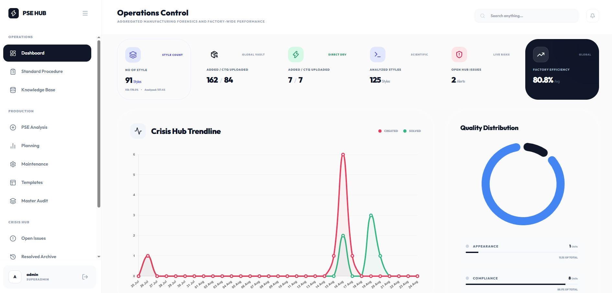

Why PSE Was Built
Apparel factories produce hundreds of complex styles per season for premier international sportswear and fashion brands. When past defects occur, institutional knowledge is lost in paper binders, leading to repeated quality errors on subsequent production runs.
Traditional Factory Pitfalls
- Siloed Style Data: Critical tech-pack specifications and construction tolerances were locked in PDF printouts lost on the factory floor.
- Repeated Past Mistakes: Lines running style variations made the same sewing errors previously solved months earlier.
- Slow Issue Escalation: Quality defects took hours to travel from QA roving inspectors to ME and production managers.
- Paper SOP Inconsistency: Operators were trained on outdated standard operating procedure sheets with no version control.
The Connected PSE Approach
- Centralized Digital Style Vault: Complete style history with digital measurement sheets, stitch specs, and critical zones.
- CTQ Risk Matrix: Visual identification of high-risk seams, needle tension risks, and critical tolerance points.
- Real-Time Issue Escalation & Resolution: Immediate digital logging with photo attachments and corrective action tracking.
- Interactive SOP Training: Standardized digital operational procedures accessible from any shopfloor terminal.
Core Enterprise Modules
Digital Style Vault & Repository
Instant search by style number, buyer, season, and silhouette. Stores stitch types, SPI standards, thread codes, and seam construction rules.
CTQ (Critical To Quality) Radar
Highlights high-risk failure points on garments (e.g. collar balance, sleeve insertion, hem puckering) to focus quality inspection resources.
Instant Issue Escalation Engine
Floor QA inspectors log defects in real-time. Dispatches instant notifications to Line Chiefs, Technical Heads, and Merchandisers.
Digital SOP Procedures
Standard operating procedure cards detailing machine guides, folder attachments, seam allowance templates, and operator motions.
Final Inspection & Audit Forensics
Pre-shipment audit analytics correlating final AQL inspection findings back to root-cause sewing lines and specific style batches.
Executive Operations Hub
Aggregated manufacturing telemetry showing plant-wide defect Pareto charts, first-time-through (FTT) rates, and closed issue resolution stats.
Connected Quality Ecosystem
Modern Frontend Architecture
Built with zero external framework overhead for blazing fast loading on low-spec shopfloor tablets. Includes custom sound FX and canvas rendering.
Indexed Style Database
Structured JSON style models storing dimensional tolerances, machine specifications, folder attachments, and defect mitigation procedures.
Closed-Loop Escalation
Issues cannot be closed without verified root cause analysis (5-Why), corrective action assignment, and QA lead sign-off.
Production Screenshots & Workflows
Switch tabs to explore the core modules or click any screenshot to enlarge in high resolution.

Operations Control Center
Live overview showing aggregated factory telemetry, active CTQs, and issue resolution metrics.

Style Knowledge Hub
Centralized digital vault indexing all styles, silhouettes, construction notes, and past challenges.

Critical to Quality (CTQ) Risk Radar
Identification of high-risk seam operations with tolerance parameters and needle guide specs.

Shopfloor Issue Escalation Log
Real-time ticket logging from active sewing lines with photo uploads and severity flags.

Resolution & Corrective Action
Structured 5-Why root cause analysis and sign-off workflow preventing recurrence.

Digital Standard Operating Procedures (SOP)
Visual step-by-step assembly guides with machine setup templates and quality checkpoints.
Factory Floor Operations Control
Aggregated operational dashboard providing real-time metrics across styles in production, line status, and active resolution workflows.
Centralized Style Knowledge Hub
Eliminates lost paper tech packs by categorizing technical specifications, silhouettes, and fabric tolerances into searchable digital records.
Critical to Quality (CTQ) Risk Radar
Visual risk heatmap pinpointing high-risk operations, critical stitch margins, and preventive machine settings before bulk loading.
Real-Time Shopfloor Issue Escalation & Root Cause Analysis
Direct line-to-engineering ticketing with photo uploads, severity tags, and structured 5-Why root cause verification preventing repeat defects.
Digital Standard Operating Procedures (SOP)
Interactive step-by-step assembly guides, machine attachments, and quality checkpoints accessible directly on line tablets.
Streamlined Quality & Defect Prevention
Dramatically reduced the time from shopfloor defect discovery to engineering resolution with streamlined digital tickets.
Eliminated bulky physical binders and handwritten quality checklists across sewing lines with centralized tablet guides.
Proactive CTQ awareness and standardized SOPs eliminated common seam assembly defects and operator rework.
Preserved past defect root causes and machine setup parameters, preventing repeated errors when styles recur.